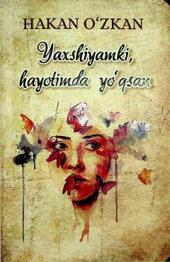

YHSevgi va ayriliq azoblarini yengishga yordam beruvchi ta'sirli kitob.
Mazkur kitob sevgi, ayriliq azoblari va munosabatlardagi qiyinchiliklarni yengishga bag'ishlangan. Muallif o'zining hayotiy tajribalariga tayangan holda, kitobxonlarga qalb jarohatlarini davolashda va ruhiy tiklanishda yordam berishni maqsad qilgan.